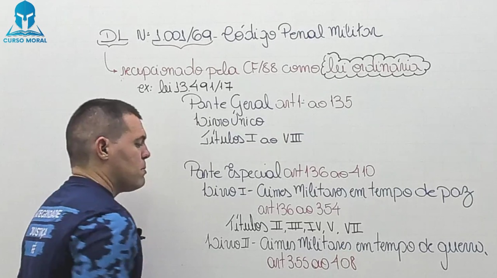
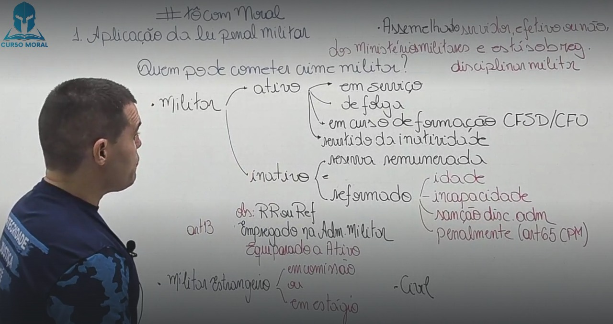
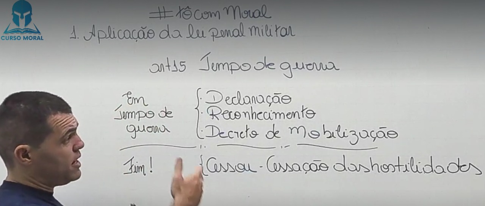
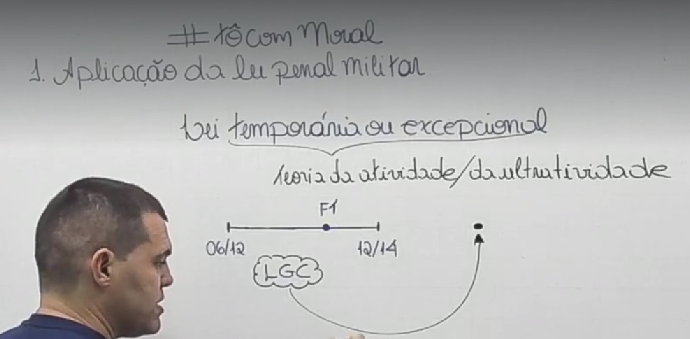
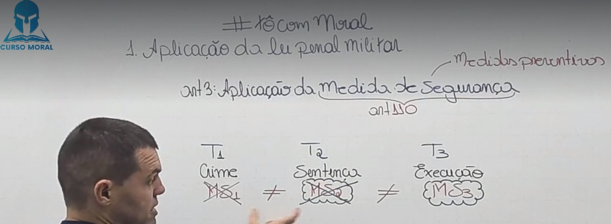
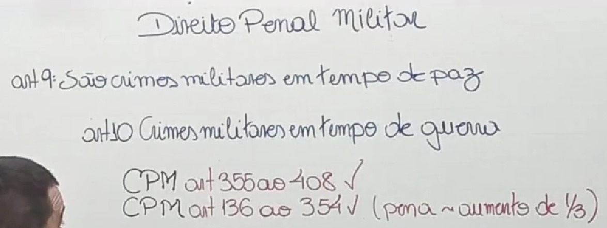

🎥 01. Introdução ao Direito Penal Militar
Sua Função é tutelar bens jurídicos importantes(Relevantes) para o funcionamento regular das instituições militares como:
📌 Hierarquia
📌 Disciplina
📌 Autoridade
📌 Serviço Militar
📌 Função Militar
📌 Dever Militar.
Lei Ordinária



🎥 02. Aplicação da Lei Penal Miltar- Parte 1
📌 Em serviço
📌 De Folga
📌 Em Curso de Formação
📌 Revertido da Inatividade.
📌 Reserva Remunerada
📌 Reformado
📌 Por idade
📌 Incapacidade
📌 Sação Disciplinar Administrativa
📌 Penalmente (Art. 65)
Equibarado a Atividade, para efeito da aplicação da lei penal militar (Art. 12)
Sim, para efeito da aplicação da lei penal militar, quando pratica ou contra ele é praticado crime militar (Art. 13)
Sim, quando em comissão ou estágio nas forças armadas, ressalvando o disposto em tratados ou conveções internacionais (Art. 11)
Sim, no Art. 9º III - os crimes praticados por militar da reserva, ou reformado, ou por civil, contra as instituições militares, considerando-se como tais não só os compreendidos no inciso I, como os do inciso II, nos seguintes casos:
📌 a) contra o patrimônio sob a administração militar, ou contra a ordem administrativa militar;
📌 b) em lugar sujeito à administração militar contra militar em situação de atividade ou assemelhado, ou contra funcionário de Ministério militar ou da Justiça Militar, no exercício de função inerente ao seu cargo;
📌 c) contra militar em formatura, ou durante o período de prontidão, vigilância, observação, exploração, exercício, acampamento, acantonamento ou manobras;
📌 d) ainda que fora do lugar sujeito à administração militar, contra militar em função de natureza militar, ou no desempenho de serviço de vigilância, garantia e preservação da ordem pública, administrativa ou judiciária, quando legalmente requisitado para aquêle fim, ou em obediência a determinação legal superior.
Considera-se assemelhado o servidor, efetivo ou não, dos Ministérios da Marinha, do Exército ou da Aeronáutica, submetido a preceito de disciplina militar, em virtude de lei ou regulamento.(Art. 21)

🎥 03. Aplicação da Lei Penal Miltar- Parte 2
O tempo de guerra, para os efeitos da aplicação da lei penal militar, começa com a declaração ou o reconhecimento do estado de guerra, ou com o decreto de mobilização se nêle estiver compreendido aquêle reconhecimento; e termina quando ordenada a cessação das hostilidades.(Art. 15)

Aos crimes praticados em tempo de guerra, salvo disposição especial, aplicam-se as penas cominadas para o tempo de paz, com o aumento de um terço.(Art. 20)
A Lei de Introdução ao Código Penal (lei nº 3.914/41) define crime dessa maneira: Art 1º - Considera-se crime a infração penal que a lei comina pena de reclusão ou de detenção, quer isoladamente, quer alternativa ou cumulativamente com a pena de multa; contravenção, a infração penal a que a lei comina, isoladamente, pena de prisão simples ou de multa, ou ambas, alternativa ou cumulativamente.
📌 Crime comissivo: é aquele que é praticado por um comportamento positivo do agente, isto é, um fazer. São comissivos os crimes de furto e de infanticídio por exemplo.
📌 Crime omissivo: é aquele que é praticado por meio de um comportamento negativo, uma abstenção, um não fazer, omissão.
As condutas que não são determinadas como crimes são fatos atípicos porque não existe a determinação de aplicação de pena para a prática desses atos.
O fato típico (a conduta típica) é a ação ou omissão promovida pelo seu autor e prevista em lei como crime.
Não há crime sem lei anterior que o defina, nem pena sem prévia cominação legal. (Art. 1º CPM)
📌 Princípio da Reserva legal; Para o Crime e a Pena
📌 Princípio da Anterioridade da lei; Para o Crime e a Pena
📌 Princípio da Taxatividade; Para o Crime
O agente somente poderá ser processado, se sua conduta for previamente tipificada (com clareza e precisão) como crime.
Decorrente da reserva legal, o princípio da anterioridade veda a responsabilização criminal dos indivíduos por fatos praticados antes da entrada em vigor da lei penal que os define como crime e preveja a respectiva sanção.
A lei Penal deve ser clara e precisa, de forma que o destinatário da lei possa compreende-la. sendo vedada, portanto, com base em tal princípio, a criação de tipos que contenham conceitos vagos ou imprecisos. A lei deve ser, por isso, taxativa.

🎥 04. Aplicação da Lei Penal Miltar- Parte 3
Ninguém pode ser punido por fato que lei posterior deixa de considerar crime, cessando, em virtude dela, a própria vigência de setença condenatória irrecorrível, salvo quando aos efeitos de natureza civil. (Art. 2 CPM) (Abolitio Criminis)
📌 A lei posterior que, de qualquer outro modo, favorece o agente, aplica-se
retroativamente, ainda quando já tenha sobrevindo sentença condenatória irrecorrível. (Art. 2º, § 1ºCPM)
📌 Para se reconhecer qual a mais favorável, a lei posterior e a anterior devem ser consideradas separadamente, cada qual no conjunto de suas normas aplicáveis ao fato.(Art. 2º, § 2º CPM)
É a nova lei que, de qualquer modo, prejudica o réu, sendo irretroativa, devendo ser aplicada a lei vigente quando do tempo do crime. Trata-se de observância da lei ao princípio da anterioridade, corolário do princípio da legalidade.
É a nova lei que de qualquer modo beneficia o réu. Esta lei retroagirá, atendendo à regra, prevista no artigo 2°, do CPM. A lei penal nova que beneficia o réu não respeita a coisa julgada, sendo aplicada mesmo quando o agente já tenha sido condenado definitivamente.
Quando nova lei penal descriminaliza fato que a lei anterior considerava como crime. Neste sentido, a lei passada é revogada e o fato típico, então, passa a constituir fato atípico. Como, por exemplo, os antigos crimes de adultério, rapto consensual e sedução.

A lei excepcional ou temporária, embora decorrido o período de sua duração ou cessadas as circunstâncias que a determinaram, aplica-se ao fato praticado durante sua vigência. (Art. 4º CPM)
Trata-se da teoria adotada no Brasil e tem relação com o tempo do crime, ou seja, por essa teoria considera-se praticado o crime no momento da ação ou omissão ainda que outro seja o momento do resultado (art. 5º, CPM).
Contrariando a primeira, a teoria do resultado considera o lugar onde se deu o resultado do crime.
De forma ampla, a teoria da ubiquidade ou mista considera as duas teorias anteriores, sendo que por meio desta pode se considerar o local onde se produziu a ação ou omissão, quanto aquele onde ocorreu o resultado
consiste na ação de aplicar uma lei (ou dispositivo de lei) que já foi revogada em casos que ocorreram durante o período em que esta estava vigente. A lei só é ultrativa se for mais benéfica ao acusado do que a legislação atual.

🎥 05. Aplicação da Lei Penal Miltar- Parte 4
As medidas de segurança regem-se pela lei vigente ao tempo da sentença, prevalecendo, entretanto, se diversa, a lei vigente ao tempo da execução. (Art. 3º)
São medidas preventivas.
As medidas de segurança são pessoais ou patrimoniais. As da primeira espécie subdividem-se em detentivas e não detentivas.
📌 As detentivas são a internação em manicômio judiciário e a internação em estabelecimento psiquiátrico anexo ao manicômio judiciário ou ao estabelecimento penal, ou em seção especial de um ou de outro.
📌 As não detentivas são a cassação de licença para direção de veículos motorizados;
📌 O exílio local e a proibição de freqüentar determinados lugares.
As patrimoniais são a interdição de estabelecimento ou sede de sociedade ou associação, e o confisco.(Art. 110º)
As medidas de segurança sòmente podem ser impostas:
📌 I - aos civis;
📌 II - aos militares ou assemelhados, condenados a pena privativa de liberdade por tempo superior a dois anos, ou aos que de outro modo hajam perdido função, pôsto e patente, ou hajam sido excluídos das fôrças armadas;
📌 III - aos militares ou assemelhados, no caso do art. 48;
📌 IV - aos militares ou assemelhados, no caso do art. 115, com aplicação dos seus §§ 1º, 2º e 3º. (Art. 111º)

Considera-se praticado o crime no momento da ação ou omissão, ainda que outro seja o do resultado. (Art. 5º)
Considera-se praticado o fato, no lugar em que se desenvolveu a atividade criminosa, no todo ou em parte, e ainda que sob forma de participação, bem como onde se produziu ou deveria produzir-se o resultado. Nos crimes omissivos, o fato considera-se praticado no lugar em que deveria realizar-se a ação omitida (Art. 6º)
📌 Ação: Lugar 👉 Teoria da Ubiquidade;
📌 Omissão: Lugar 👉 Teoria da Atividade;

🎥 06. Aplicação da Lei Penal Miltar- Parte 5
Aplica-se a lei penal militar, sem prejuízo de convenções, tratados e regras de direito internacional, ao crime cometido, no todo ou em parte no território nacional, ou fora dêle, ainda que, neste caso, o agente esteja sendo processado ou tenha sido julgado pela justiça estrangeira. (Art. 7º)
📌 Para os efeitos da lei penal militar consideram-se como extensão do território nacional as aeronaves e os navios brasileiros, onde quer que se encontrem, sob:
📌 comando militar;
📌 militarmente utilizados ou
📌 ocupados por ordem legal de autoridade competente;
ainda que de propriedade privada. (Art. 7º, 1§ CPM)
👉 Ampliação a aeronaves ou navios estrangeiros
📌 É também aplicável a lei penal militar ao crime praticado a bordo de aeronaves ou
navios estrangeiros, desde que em lugar sujeito à administração militar, e o crime atente contra as instituições militares. (Art. 7º, 2§ CPM)
👉 Conceito de navio
📌 Para efeito da aplicação deste Código, considera-se navio tôda embarcação sob
comando militar. (Art. 7º, 3§ CPM)

A pena cumprida no estrangeiro atenua a pena imposta no Brasil pelo mesmo crime, quando diversas, ou nela é computada, quando idênticas. (Art. 8º)
No CPM não prêve a pena de multa. Não existe pena pecuniária no CPM.

📌 I - os crimes de que trata êste Código, quando definidos de modo diverso na lei penal comum, ou nela não previstos, qualquer que seja o agente, salvo disposição especial; (Conceito topográfico)(art. 9º)
📌 II - os crimes previstos neste Código e os previstos na legislação penal, quando praticados: (Redação dada pela Lei nº 13.491, de 2017) (art. 9º)

Deixar de apresentar-se o convocado à incorporação, dentro do prazo que lhe foi marcado, ou, apresentando-se, ausentar-se antes do ato oficial de incorporação:
🔒 Pena - impedimento, de três meses a um ano.
📌 Caso assimilado
§ 1º Na mesma pena incorre quem, dispensado temporàriamente da incorporação, deixa de se apresentar, decorrido o prazo de licenciamento.
📌 Diminuição da pena
§ 2º A pena é diminuída de um têrço:
a) pela ignorância ou a errada compreensão dos atos da convocação militar, quandoescusáveis;
b) pela apresentação voluntária dentro do prazo de um ano, contado do último dia marcado para a apresentação.
💡 OBS: Crime cometido por civil.
🎥 07. Aplicação da Lei Penal Miltar- Parte 6
💡 MA: 🔦 Militar da Ativa
💡 A: 🔦 Assemelhado
💡 MS: 🔦 Militar em Serviço
💡 MI: 🔦 Militar Inativo (Reserva ou Rformado)
💡 C: 🔦 Civil
📌 MA ou A 🤜 MA ou A
📌 MA ou A 🤜 MI ou C ou A (Em local sujeito a administração Militar).
📌 MA 🤜 Patrimônio Militar.
📌 MS 🤜 MI ou C.
📌 MI 🤜 MA ou A (Em local sujeito a administração Militar).
📌 MI OU C 🤜 MS.
📌 MI OU C 🤜 Patrimônio Militar.

Na Primeira Instância, o julgamento é realizado pelos Conselhos de Justiça, formados por quatro oficiais e pelo juiz federal da Justiça Militar da União.
Na primeira instância, o Conselho Permanente de Justiça é competente para processar e julgar militares que não sejam oficiais. O Conselho Especial de Justiça é competente para processar e julgar oficiais, exceto os oficiais generais, que são processados diretamente no Superior Tribunal Militar. Os civis são julgados monocraticamente pelo juiz federal da Justiça Militar da União.
Na primeira instância um Juíz de direito singularmente.
Na segunda instÂncia o TJM
Na primeira instância um Conselho de Justiça Militar.
Na segunda instÂncia o TJM
Tribunal de Juri.
💡 OBS: Os crimes de que trata este artigo, quando dolosos contra a vida e cometidos por
militares das Forças Armadas contra civil, serão da competência da Justiça Militar da
União, se praticados no contexto:
📌 I - do cumprimento de atribuições que lhes forem estabelecidas pelo Presidente da
República ou pelo Ministro de Estado da Defesa;
📌 II - de ação que envolva a segurança de instituição militar ou de missão militar, mesmo que não beligerante; ou
📌 III - de atividade de natureza militar, de operação de paz, de garantia da lei e da ordem ou de atribuição subsidiária, realizadas em conformidade com o disposto no art. 142 da CF e na forma dos seguintes diplomas legais:
📍 a) Lei nº 7.565, de 19 de dezembro de 1986 - Código Brasileiro de Aeronáutica;
📍 b) Lei Complementar nº 97, de 9 de junho de 1999;
📍 c) Decreto-Lei nº 1.002, de 21 de outubro de 1969 - Código de Processo Penal Militar; e
📍 d) Lei nº 4.737, de 15 de julho de 1965 - Código Eleitoral.

São duas funções.
💡 Primeira: Ampliar os crimes militares.
💡 Segunda: Ampliar a competência das Justiça Militar Federal.
I - os especialmente previstos neste Código para o tempo de guerra; (Art. 355 ao 408)
II - os crimes militares previstos para o tempo de paz; (Art. 136 ao 344, com aumento de 1/3)
III - os crimes previstos neste Código, embora também o sejam com igual definição na lei penal comum ou especial, quando praticados, qualquer que seja o agente:
